Created: 17/11/2014
By: IncredibleBytes
Email: contact@incrediblebytes.com
Thank you for purchasing my theme. If you have any questions that are beyond the scope of this help file, please feel free to email via my user page contact form here. Thanks so much!
To find information about installing WordPress, please visit http://codex.wordpress.org/Installing_WordPress
The theme requires a number of plugins to provide some of the features:
* Bundled plugins are included inside the theme as ZIP packages (in wp-content/themes/ib-educator/plugins folder) and are managed by TGM Plugin Activation Class.
Upon downloading the zip package from themeforest.net extract it and find the file named "ib-educator.zip" and follow the steps:
It's important to note that if you would like to customize the theme code it's important that you do it through the child theme. As the parent theme will be updated periodically to introduce new features, improvements and bug fixes. The ib-educator theme files will need to be overwritten with each update. Therefore, the child theme helps you to preserve your customizations.
Please check this section to learn more about child themes: C) Customization (Child Theme)
Please check the following sections:
This theme uses WordPress Customizer API to provide the settings. Please find the theme settings in Admin Panel » Appearance » Customize.
Lets say, you need to modify the theme files, e.g. header.php. I strongly advise you to use a child theme to do this. This allows you to easily update the original theme when updates come out. All your code modifications will go to the directory of the child theme.
The best explanation of using the child theme is in the Wordpress.org documentation - Child Themes.
I have created a child theme starter. You can find it in the folder "Child Theme", inside the package.
To install the child theme you need to:
After the theme installation you need to configure a couple of things:
Please check the theme installation section to make sure that you installed all required plugins.
Go to Appearance » Menus and create 3 menus:
- Main menu
- Logged in user menu
- Footer menu
Please check the appropriate checkbox in the "Theme locations" section for each menu.
Go to Appearance » Widgets and add widgets to various widget areas.
If you've installed the WooSidebars plugin, you can add your own widget areas to posts and pages in Appearance » Widget Areas.
Go to Appearance » Customize and add your settings. The theme adds the following settings sections to Customizer:
General
Footer Settings
Toolbar Settings
Share Settings
Page Layouts
Log in/register
Colors
Please have a look at other settings sections too.
The maximum width for the page content in this theme is 1140px. So you might want to set the WordPress "large" image size to 1140px by 1140px. To do this please go to Settings » Media and find the "Large size" in "Image Sizes" settings sections.
Please follow the instructions from here
Please follow the instructions from here
Please follow the instructions from here
Please follow the instructions from here
To import data (posts, courses, etc) from theme demonstration website, you need to:
The theme updates will be released from time to time. These updates may introduce the following:
It is very important to keep the theme up to date.
The theme will periodically check http://incrediblebytes.com for updates. If there is an update available, it will display an admin notice. To enable update notice, please make sure that "Theme Updates Notifications" checkbox is checked in Appearance » Customize, General section:
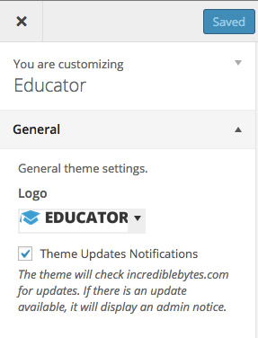
You can use the Envato WordPress Toolkit plugin to install theme updates:
Envato WordPress Toolkit
Envato WordPress Toolkit plugin is also included with the theme. The TGM Plugin Activation Class will ask you to install it. It checks for availability of the plugins that are used by this theme.
In order to load the larger versions (2x) of the images for devices with retina (high pixel density) screens you can enable the IB Retina plugin. Once enabled, please go to Media » IB Retina and select those image sizes that you would like to generate 2x versions for.
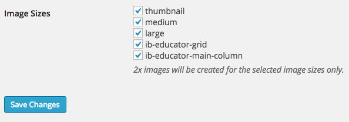
When IB Retina plugin is enabled, it will automatically create a 2x version for each image you upload, specifically for each image size.
If you enabled the IB Retina plugin after you uploaded your first images, you will need to use the famous "Regenerate Thumbnails" plugin to regenerate image sizes for the images.
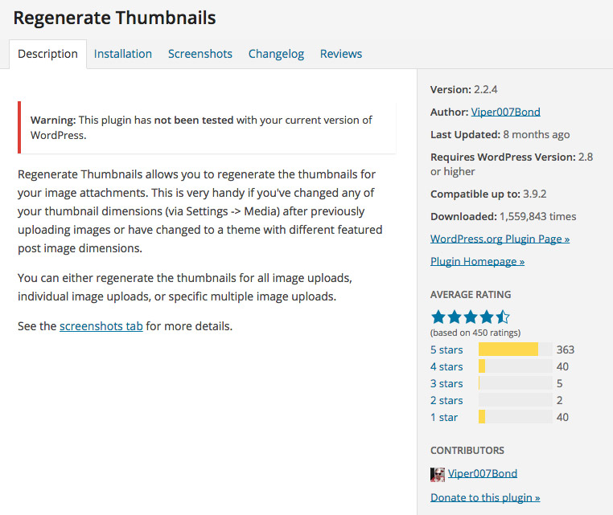 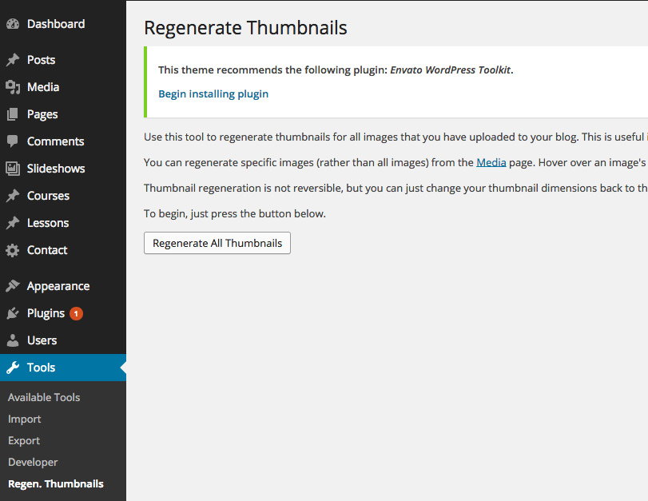
To delete the 2x versions of the images please go to Media » Library, select the images and use "Bulk Actions" select box option "Delete 2x Images":
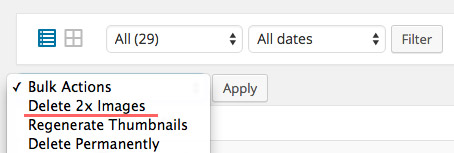
The theme uses Google Fonts.
You can configure fonts on Appearance » Customize » Font Settings:
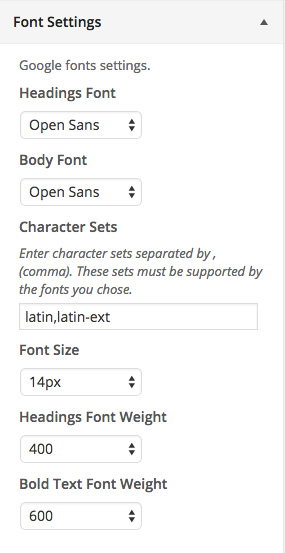
Some fonts support multiple character sets (subsets). In order to specify which sets should the browser download, you can enter the sets names into the "Character Sets" text input (separate the sets by comma (e.g. latin,latin-ext)).
To find out which subsets are supported by chosen fonts, please search for this font in google.com/fonts and click "Quick-use" button. Available character sets should be listed in "Choose the character sets you want" section. You need to use the short names (example: for "Latin Extended (latin-ext)", use latin-ext).
All character sets available on Google Fonts (each set is pecific to a particular font):
Due to the differences in base sizes for different fonts, the theme offers a font-size setting. When you change the font, you can play with "Font Size" setting to make the font look better.
Font weight settings are offered, because different fonts provide different combination of font weights. Please have a look at the list of font weights that exist for the available fonts:
To add another Google font to the options panel, you need to add a piece of code to the functions.php in your child theme:
function add_my_chosen_font( $fonts ) {
$fonts['Open Sans'] = array(
'font_styles' => '400,600,700,400italic,600italic,700italic', // the "family" parameter of the chosen google font URL
);
return $fonts;
}
add_filter( 'ib_theme_get_fonts', 'add_my_chosen_font' );
Please go to Page Content section to get the page content (text, shortcodes).
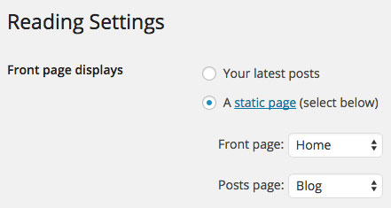
Please go to Slideshows » Add New
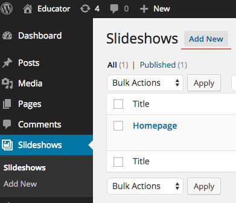
Please use the following shortcode for the homepage slideshow:
[section_slideshow id="slideshow-slug"]
The "id" attribute is the slug of the slideshow:
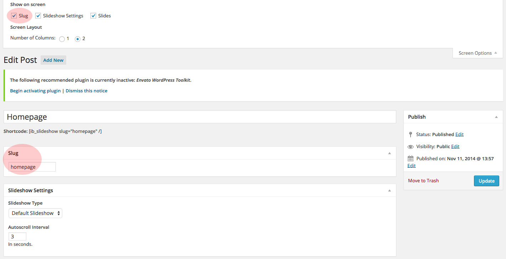
You can also use a shortcode to embed this slideshow into posts and pages:
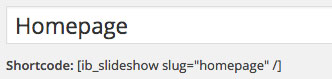
This theme adds additional styles for Contact Form 7 plugin. You need to install this plugin to be able to create contact forms.
To add a form you need to go to Contact » Add New. Then paste the new form shortcode to a contact page.
theme_package_from_themeforest/Documentation/contact-form/contact-form.txt
Please find latest documentation for this plugin on its website:
The online courses functionality is provided by the Educator plugin. Please install this plugin to be able to setup online courses.
The best location to view this plugin documentation is it's website. As plugin might be updated periodically to introduce new features, bug fixes and improvements.
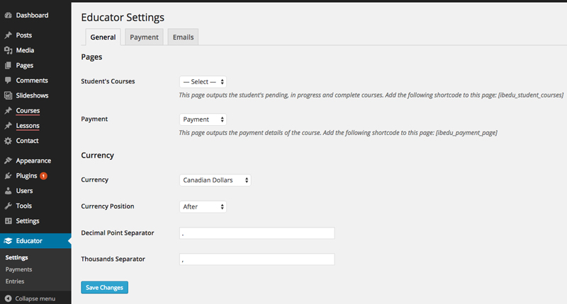
To add multiple page sections with custom background:
Select "Sections" in the "Page Attributes" meta box.
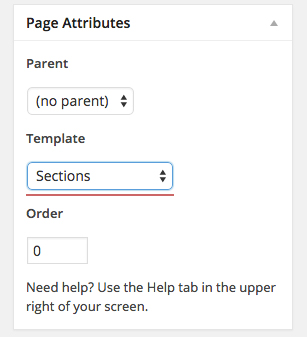
Use the following shortcode for each section:
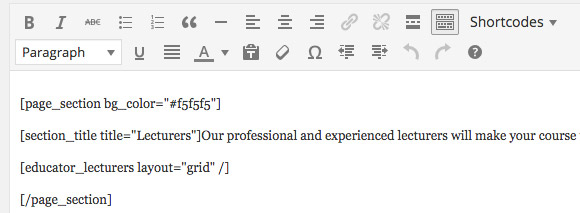
A number of basic shortcodes is provided by Dm3Shortcodes plugin:
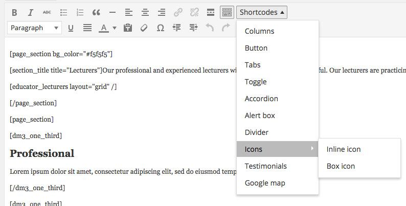
Shortcodes provided by Educator Theme Features plugin:
[page_section bg_color="#f5f5f5"] Content: text, image, etc. [/page_section]
[section_title title="Section Title"]Section Subtitle[/section_title]
[educator_courses show_price="1" ids="1 2 3" /]
ids: The list of IDs of the courses you'd like to display separated by spaces.
show_price: 1 - display price, 0 - hide price.
[educator_lecturers ids="1 2 3" /]
ids: The list of IDs of the WordPress users separated by spaces.
[section_slideshow id="slideshow-slug"]
id: slideshow slug.
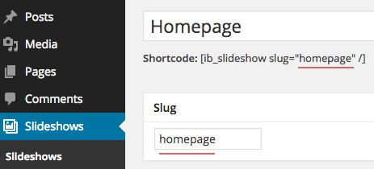
[memberships_page layout="2 columns"]
layout: 2 columns, 3 columns, or list.
The theme has a couple of templates that embed log in and register pages into front end. These pages use the original WordPress features for ensure security.
Log In Page: Go to Pages » Add New and set the template to "Log In Page".
Register Page: Go to Pages » Add New and set the template to "Register Page".
User Page: Go to Pages » Add New and set the template to "User Page".
Now, go to Appearance » Customize » Log in/register and choose appropriate page for each setting.
Please go to Educator » Settings and make sure that the following pages are set up:
Please edit the following pages and set the "Template" option for each of these pages to "User page":
Please edit the following pages and set the "Order" option of each of these pages to an appropriate value.
Please find the PSD file in the theme package.
I've created snippets of page content for the pages from the demo website. Please find them in "documentation/page-content" folder in the theme package (the one you downloaded from themeforest).
Important. Before copying the contents to the editor, click on the "Text" tab in the upper right corner of the post editor. When done, you can switch back to "Visual".
Images that are displayed on the theme demo are not included in the theme package. Please do not attempt to copy the images from the theme demo website. You must purchase licenses for those images. Most of the images on theme demo website are purchased from photodune.com
I've used the following images, icons or other files as listed.
Once again, thank you so much for purchasing this theme. As I said at the beginning, I'd be glad to help you if you have any questions relating to this theme. No guarantees, but I'll do my best to assist. If you have a more general question relating to the themes on ThemeForest, you might consider visiting the forums and asking your question in the "Item Discussion" section.
IncredibleBytes